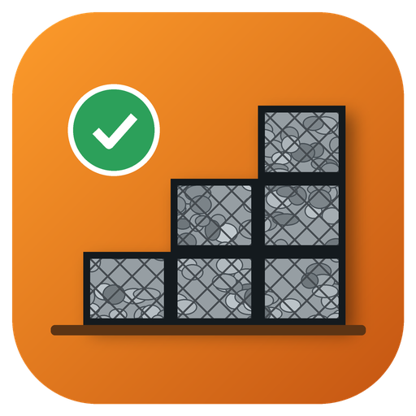

GabiãoCADVersão de {{DATA}}. Responsável: {{EMPRESA}}, CNPJ {{CNPJ}}. Contato: {{CONTATO}}
Esta política explica quais dados o GabiãoCAD coleta, para quê e como você controla seus dados, conforme a Lei Geral de Proteção de Dados (LGPD).
| Dado | Para quê | Com quem é compartilhado | Por quanto tempo |
|---|---|---|---|
| Nome e e-mail | Criar a conta e enviar avisos | Supabase (hospedagem da conta) | Enquanto a conta existir |
| Projetos salvos na nuvem | Guardar e abrir os projetos | Supabase | Até o usuário apagar ou excluir a conta |
| Fotos enviadas para análise | Gerar as sugestões | Anthropic, apenas para processar a análise | Não são guardadas pelo GabiãoCAD depois da resposta |
| Dados de pagamento | Cobrar a assinatura | Mercado Pago (o GabiãoCAD não vê o número do cartão) | Pelo prazo exigido em lei |
| Projetos no navegador | Continuar de onde parou | Ninguém: ficam só no seu computador | Até você limpar os dados do navegador |
Você pode pedir cópia dos seus dados, correção e exclusão da conta pelo e-mail {{CONTATO}}.
Responsável pelo tratamento: {{EMPRESA}}. Encarregado de dados: {{ENCARREGADO}}.